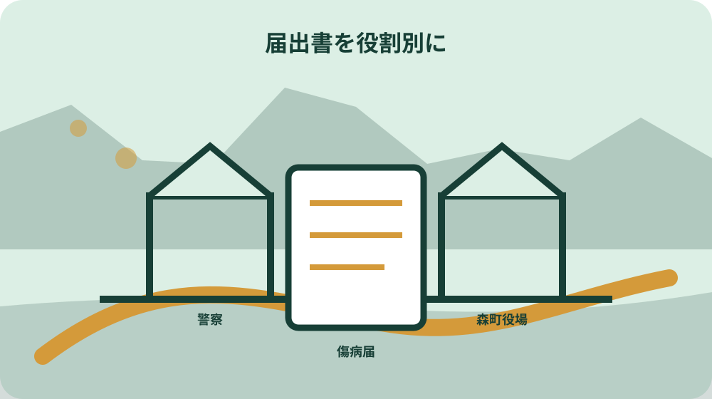
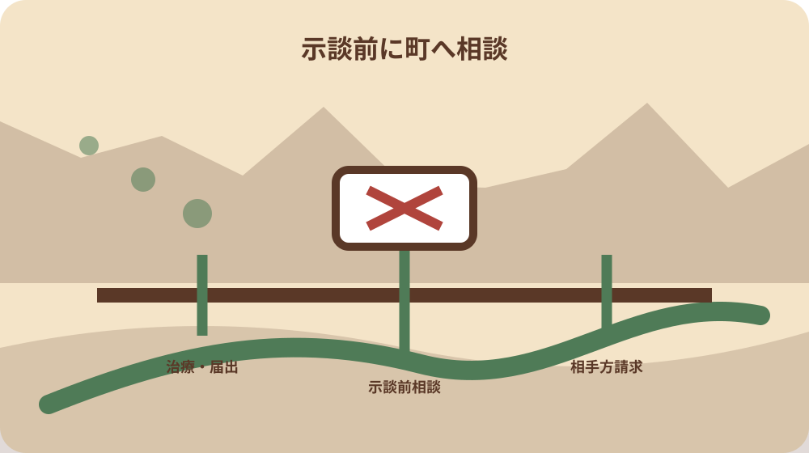

先に結論を確認する
この記事の答え：救護と受診を優先し、医療機関へ第三者行為と伝えます。交通事故は警察へ届け、森町国保年金係へ国保利用を連絡して必要な第三者行為届の組合せを確認します。
森町で最初に照合する条件：事故時点で森町国民健康保険の資格があるかを確認し、勤務中・通勤中や加入切替直後は使う保険を自己判断しない。
結論は治療・警察・町・相手方連絡を四本に分ける
森町国保へ加入する人が交通事故などでけがをしたとき、最初の成果物は示談額の計算表ではありません。治療、警察への届出、森町国保への第三者行為届、相手方や保険会社との連絡を四本の線へ分けた事故連絡票を作ります。
事故連絡票の左上に事故日時と場所、受診者、受診先、国保資格を置きます。右側には警察への届出日時、森町国保年金係への連絡日時、相手方氏名、保険会社と担当者を置き、未確認の欄を空白ではなく未確認と表示します。
この記事の直接回答は、救護と受診を優先し、医療機関へ第三者行為と伝え、警察へ届け、森町へ国保利用を連絡して必要様式を確認し、町への相談前に示談や治療費受領を進めないことです。各手順は同時進行でも、記録は別欄にします。
これは事故の過失割合や賠償額を判断する記事ではありません。森町、森町病院、静岡県国保連合会の案内を基に、国保が一時負担した医療費の求償を妨げず、本人と家族が必要な事実を町へ戻すための実務記録です。
一件表には、救護の担当、警察へ連絡した人、森町へ連絡する人、原本を保管する人も記載します。同じ家族が全対応を背負わず、連絡不能のときに誰へ交代するかを決めます。役割変更は元の担当名を消さず、引継ぎ日時と渡した資料を追記します。
救護と受診を手続より先に置く
事故直後は届出書を探すより、危険な場所から離れ、必要な救護と受診を優先します。症状や負傷の程度を家族だけで判定せず、緊急性がある場合は119番など適切な救急対応を選びます。事故連絡票は安全が確保された後に作ります。
受診時には交通事故、けんか、犬にかまれたなど第三者の行為による負傷であることを医療機関へ伝えます。通常のけがとして説明した後で事故原因を隠したままにせず、受付や入院案内で資格と支払方法を確認します。
公立森町病院は交通事故や仕事中のけがで入院した人へ相談を案内しています。交通事故と仕事中のけがは使う制度が同じとは限らないため、勤務中・通勤中か、相手がいるかという事実を伝え、国保利用を自己判断しません。
家族が到着するまで本人が説明できない場合に備え、氏名、生年月日、住所、加入保険、緊急連絡先を普段から分けて携帯します。ただし医療情報を必要以上に相手方へ渡さず、医療機関と町へ必要範囲で示します。
受診先へ示す資格情報は事故時点のものを確認します。就職や退職、転入出の直後なら加入先が変わっている可能性を伝え、マイナ保険証の表示だけで確定しない場合は森町と勤務先保険者の双方へ照会します。
警察の届出と事故証明を別の進捗として残す
静岡県国保連合会は交通事故にあったら速やかに警察へ届けるよう案内しています。警察への届出は森町国保への第三者行為届とは別です。事故連絡票には警察署名、届出日時、受理に関する確認、事故証明の申請状況を独立欄で残します。
交通事故証明書は事故の届出に関わる重要資料ですが、それだけで治療内容、過失割合、損害額がすべて決まるものとは扱いません。現場写真、位置、相手車両情報などは原本の撮影日時と保管者を決め、町へ何が必要か確認します。
物件事故として扱われた、証明書が発行されない、入手に時間がかかる場合も、書類がないまま放置しません。国保連合会が公開する人身事故証明書入手不能理由書の要否を森町へ尋ね、必要と確認された場合に最新版を使います。
警察への説明と町への説明で事故日時や場所がずれないよう、最初に作った時系列は消しゴムで修正せず訂正履歴を残します。記憶が曖昧な箇所は推測で埋めず、未確認と記載します。
事故証明の申請、入手、町への提出は三つの別日付です。申請しただけで提出済みにせず、受け取った原本または写しの保管場所、町が写しで受け付けるかの回答を残します。郵送時は投函日と到着確認も一行へ加えます。
森町国保へ一報し届出書の組合せを確認する
森町は第三者行為で国保を使うとき必ず届出するよう案内しています。受診後に全書類がそろうまで待たず、まず国保年金係へ事故日、受診者、国保資格、受診先、警察届出の状況を伝え、提出期限と必要書類を確認します。
国保連合会の様式一覧には傷病届、事故発生状況報告書、念書、誓約書などがあります。すべての事故で同じ組合せと決めず、交通事故か交通事故以外か、本人提出か損保会社の届出支援かを町へ伝えます。
様式をダウンロードした日、ファイル名、版、記入担当を事故連絡票に残します。古い保存ファイルや他自治体の様式を流用せず、森町公式から案内された静岡県国保連合会の最新版へ戻ります。
電話回答は担当係、日時、質問、回答、次の期限を一行にします。後日説明が変わったときは最初の回答を削除せず、追加確認日を残します。これにより家族や保険会社が別々に問い合わせても進捗を共有できます。
届出の受付後に追加資料を求められた場合は、事故番号を変えず追補欄へつなぎます。保険会社が作った書類と本人が作った書類の内容に差があれば、どちらかへ合わせて書き換えず、差異を町へ伝えて訂正方法を確認します。
傷病届と事故発生状況報告書の役割を分ける
第三者行為による傷病届は、受診者と第三者、事故や傷病の概要を保険者へ伝える中心書類です。一方、事故発生状況報告書は道路形状、進行方向、事故状況などを具体化します。二つを同じ文章の写しにせず、各様式の設問へ事実を対応させます。
事故図は美しく描くことより、道路、交差点、進行方向、衝突地点が説明と一致することを優先します。現場を再訪する場合は安全を確保し、道路上へ立ち入って撮影しません。地図画像の利用条件も確認し、必要なら手描きとします。
念書や同意に関する書類は、国保が相手方へ請求する手続に関わります。意味を読まず空欄へ署名せず、誰が何に同意する書類か、本人が記入できない場合の扱いを森町へ確認します。
誓約書など相手方の協力が関わる書類は、本人側だけで内容を作りません。相手方や保険会社へ渡した日、返却日、未回収理由を記録し、そろわない場合の提出方法を国保年金係へ相談します。
図や説明を作る際は、相手方へ責任を認めさせる表現を先に書かず、信号、標識、道路幅、進行方向、停止位置など観察できた事項を分けます。分からない距離や速度を後から推定値で埋める場合は、推定であることと根拠を明記します。

国保の一時負担と相手方賠償を混同しない
森町は第三者行為の医療費を原則加害者が負担すべきとし、賠償が遅れる場合などに国保で一時的に治療を受けられると案内しています。国保を使えたことを、相手方の責任や示談内容が確定した意味にはしません。
国保連合会は、保険者が一時負担した費用を加害者本人や相手方の自賠責・任意保険、個人賠償責任保険等へ請求すると説明しています。事故連絡票には窓口支払、国保給付、相手方から受け取った額を別列で残します。
医療機関の領収書、診療明細、保険会社からの支払案内は原本番号を付けます。同じ治療費を国保と相手方の双方から受け取ることがないよう、支払名目と対象期間を確認し、不明な入金は使途を決める前に照会します。
治療費以外の休業、慰謝、物損などは国保届出の医療費求償と同じ表で計算しません。必要な場合は専門相談へ分け、町へは国保利用に必要な事実と相手方支払の状況を正確に伝えます。
支払表には、医療機関窓口、薬局、診断書等の文書、通院交通、相手方からの受領を別行にします。どの項目が国保求償の対象かは町の確認欄で管理し、損害全体の計算表と混ぜないことで二重計上や説明漏れを防ぎます。
示談前相談を事故連絡票の停止線にする
国保連合会は、加害者から治療費を受け取ったり示談をしたりすると健康保険を使えなくなる場合があるため、示談前に保険者へ相談するよう案内しています。事故連絡票に赤い停止線を置き、町への確認日が入るまで最終合意へ進まない運用にします。
相手方から早期解決の提案があっても、何を対象とする合意かを確認します。治療終了前、後遺症の判断前、国保の求償範囲未確認の段階で、家族が口頭だけで了承したと扱われないよう会話日時と内容を残します。
すでに金銭を受け取った、書類へ署名した場合は隠さず森町へ伝えます。取り消せると自己判断せず、書類名、署名日、受領額、支払名目、相手方を整理し、必要に応じ法律専門職や保険会社へ相談します。
示談をしないことを無期限に勧める記事でもありません。国保利用と求償に影響する事実を町へ確認し、治療状況と損害範囲を把握したうえで、本人が納得できる相談先へ進むための停止線です。
停止線を解除した日には、町へ示した示談案の範囲、町の回答、相談した専門職を記録します。町への相談は示談内容の妥当性を保証するものではないため、賠償全体の判断が必要なら別の法律相談へ進み、国保の確認と役割を分けます。
交通事故以外の第三者行為も原因欄から確認する
第三者行為は自動車事故だけではありません。国保連合会はけんか、犬にかまれたけが、食中毒なども例に挙げています。受診票の原因欄に相手方や提供者が関わる事実があれば、交通事故用紙ではないから届出不要と決めません。
自転車同士、歩行者との接触、施設の設備、飲食物、他人の動物など、原因の分類に迷う場合は事実を短くまとめて国保年金係へ尋ねます。相手の故意や過失を本人が確定せず、発生日時、場所、状況、受診先を伝えます。
仕事中や通勤中のけがは労災保険の確認が必要になる場合があります。雇用形態や勤務先への報告を隠さず、国保と労災を都合で選べると思わないよう、勤務中・通勤中欄を事故連絡票へ設けます。
自損事故でも同乗者、道路設備、車両所有者など別の関係がある場合があります。相手がいないという一言で終えず、町へ事故の具体像を説明し、第三者行為届や別手続の要否を確認します。
食中毒や犬にかまれた事故では、交通事故証明が存在しないため、交通事故の必要書類一覧を機械的に当てはめません。原因、相手方、発生場所、保健所や警察等への連絡状況を伝え、該当する様式を森町へ確認します。

家族・保険会社・町の連絡を一つの履歴へ戻す
事故後は本人、家族、相手方、損害保険会社、医療機関から連絡が重なります。共通履歴には日時、発信者、受信者、要点、約束した資料、次回期限を置きます。通話録音の可否を勝手に決めず、まず書面メモで事実を残します。
保険会社が届出書作成を支援する場合も、町への提出が済んだかを本人側で確認します。担当者へ任せた日と受付確認日を別にし、「保険会社へ送った」だけで森町への届出完了と表示しません。
本人が入院中なら、家族が町へ問い合わせる際の本人確認や委任の要否を先に尋ねます。事故情報、診療情報、口座情報を家族全員のグループへ送らず、原本保管者と町連絡担当を決めます。
相手方の住所、電話番号、保険情報も個人情報です。事故対応に必要な範囲で保管し、地域の知人へ共有して交渉材料にしません。解決後の保管期間と廃棄方法は、決定通知や専門相談の必要性を踏まえて決めます。
連絡履歴の要約は「町が払う」「相手が払う」といった断定を避け、「国保利用を届出」「必要書類確認中」「相手保険の担当確定」のように事実で書きます。家族の感想や相手への評価は別メモにし、公的提出資料へ混ぜません。
森町内の事故場所を安全に伝える
森町は山間部、県道沿い、狭い生活道路、茶畑周辺など場所の説明が難しい地点があります。事故地点は地区名だけでなく、道路名、進行方向、近くの交差点や公共施設、緯度経度など、警察や救急が再確認できる情報を残します。
圏外や夜間を想定し、家族へ「現在地の共有が届かない場合」の代替を決めます。道路上でスマートフォン操作を続けず、安全な場所へ移ってから位置を送ります。山林や農地へ入る私道の場合も、所有関係をその場で断定しません。
事故現場の写真は負傷者の救護や交通の妨げにならない範囲に限ります。撮れなかったことを不利と決めつけず、警察への説明、相手方情報、目撃者、受診記録など残せた資料を整理します。
公立森町病院以外を受診しても、森町国保への届出先は加入保険者で確認します。受診先と保険者窓口を混同せず、医療機関には事故原因、町には国保利用と届出状況を伝えます。
現場位置の共有には、住所だけでなく地図上の目印と進行方向を組み合わせます。ただし、地図の線を道路境界や所有境界と説明しません。敷地設備が関係する場合は事故対応後に所有者、管理者、道路管理者へ資料を示して確認します。
大石の視点：事故記録を土地や車の責任判断へ広げすぎない
ここまでの届出、必要様式、示談前相談、国保の一時負担は公的案内です。一方、四本線の事故連絡票と停止線は、私、大石浩之の実務提案であり、森町や警察、保険会社の公式様式ではありません。
不動産の現場でも、敷地出入口、私道、側溝、樹木などが事故説明に出ることがあります。しかし事故が起きた事実だけで所有者責任や道路境界を決めず、現場の安全確保、警察・保険者への事実報告、登記や境界資料の確認を別工程にします。
私は、交渉の主張を先に作るより、誰がいつ何を確認したかを残すことが重要だと考えます。事故時刻、受診、警察届出、町への一報、書類提出、示談前確認という順序が戻せれば、家族交代でも事実を取り違えにくくなります。
家や車を売る判断は事故直後に急ぎません。修理、通院、保険処理、道路や敷地の安全確認を分け、未解決事項が何かを一覧にした後で、必要な専門家へ一件ずつ渡します。
この方法の利点は、保険者の求償に必要な情報と家族の交渉メモを混ぜないことです。事故後の気持ちが落ち着かない時期でも、今日できる作業を「町へ一報」「警察届出確認」「受診資料保管」の一つへ絞れます。
最終確認は救護・警察・町・書類・示談前相談で閉じる
事故連絡票を閉じる前に、必要な治療を受けたか、警察への届出状況を確認したか、森町国保年金係へ第三者行為を連絡したか、指定された書類を提出したか、示談前に町へ相談したかを点検します。
提出書類には版と提出日を付け、傷病届、事故状況報告書、念書、誓約書、交通事故証明書または代替書類の有無を一覧にします。不足があっても完了とせず、町から案内された次の期限を記載します。
国保の求償や支払に関する通知が届いたら、事故番号と受診記録へ結びます。相手方からの入金や保険会社の支払通知も対象項目を分け、同じ医療費が重複していないかを町へ確認します。
最後に、完了、継続治療中、町確認中、保険会社対応中、専門相談中という状態を付けます。事故が解決したと思っても、国保届出の受付確認が残っていれば閉じません。次の担当者と確認予定日を表紙へ残します。
完了後も医療費や後遺症に関する追加連絡があり得ます。ファイルをすぐ廃棄せず、保管期間を町や保険会社へ確認し、電子画像と紙原本の所在を一覧にします。廃棄時は個人情報が読めない方法を選び、家族へ完了日を共有します。